SIG & cartographie
QGIS, ArcGIS, GPS terrain, cartographie forestière, traitement et suivi de données géospatiales.
PORTFOLIO PROFESSIONNEL · YAOUNDÉ, CAMEROUN
Spécialiste SIG & cartographie forestière · Développeur · Économiste
Je conçois des outils sur mesure pour la gestion, les bases de données, l’automatisation, la cartographie et l’analyse de données.
01 · PROFIL
Professionnel polyvalent en économie, développement logiciel et SIG, je combine collecte de données, traitement géospatial, conception d’applications et gestion de bases de données pour produire des solutions concrètes.
Mon approche consiste à partir du besoin métier, structurer la donnée, automatiser ce qui peut l’être et restituer l’information sous forme de cartes, tableaux de bord ou applications.
02 · SAVOIR-FAIRE
Une combinaison de compétences géospatiales, techniques et analytiques.
QGIS, ArcGIS, GPS terrain, cartographie forestière, traitement et suivi de données géospatiales.
Conception d’outils métier et d’interfaces desktop avec Python et Tkinter.
Conception et gestion de bases de données pour structurer, sécuriser et exploiter les informations.
Excel avancé, macros, Power BI, VBA / LibreOffice Basic et analyse de données.
Mise en œuvre d’une authentification sécurisée, notamment avec PBKDF2 salé.
Formation et expérience en économie, gestion financière et encadrement.
Utilisation raisonnée d’outils d’IA dans plusieurs domaines — développement logiciel, analyse de données, rédaction technique et automatisation — pour gagner en efficacité tout en gardant une approche professionnelle et rigoureuse.
03 · RÉALISATIONS
Des projets qui montrent la continuité entre données, métier, interface et restitution.
Traçabilité forestière · Application desktop
Application de traçabilité forestière et de gestion des documents de transport : lettres de voiture, CAE, DF10 et données associées.
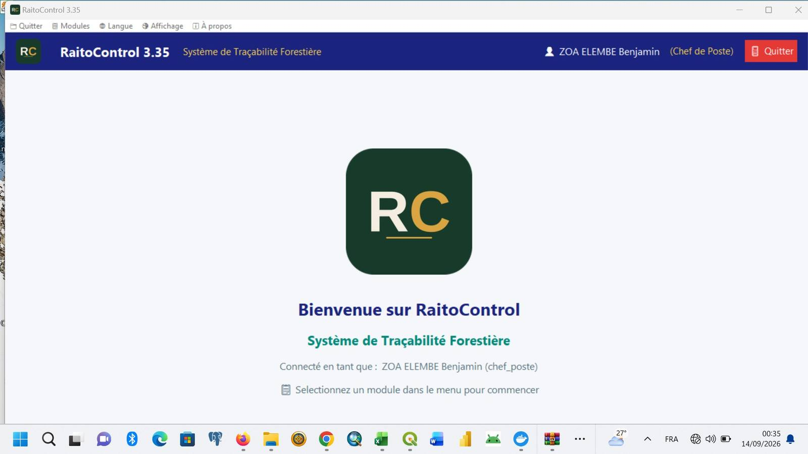
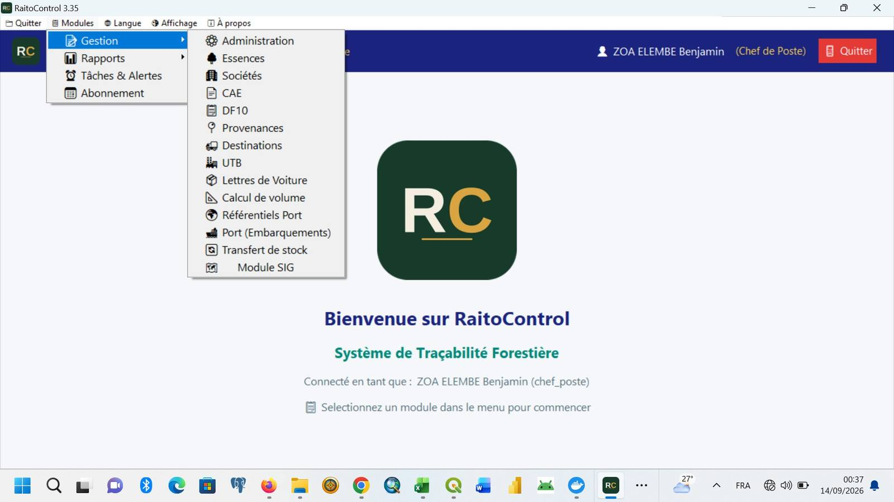
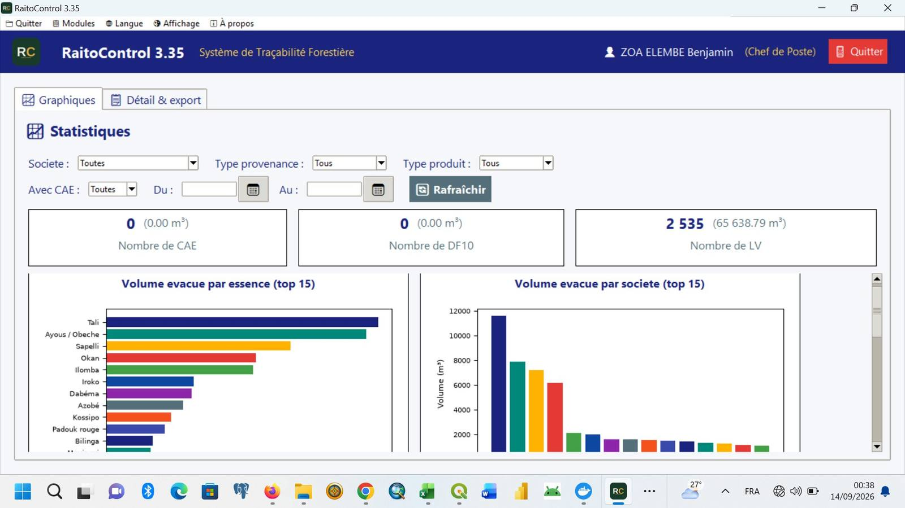
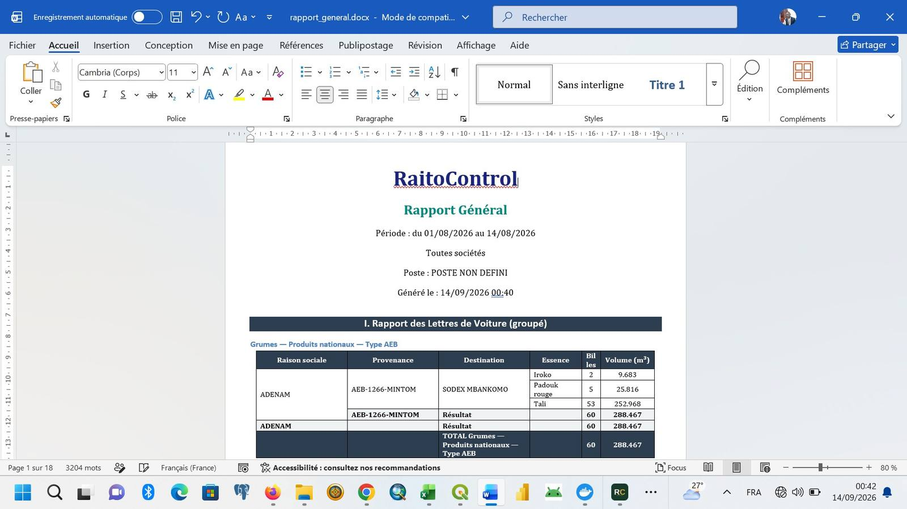
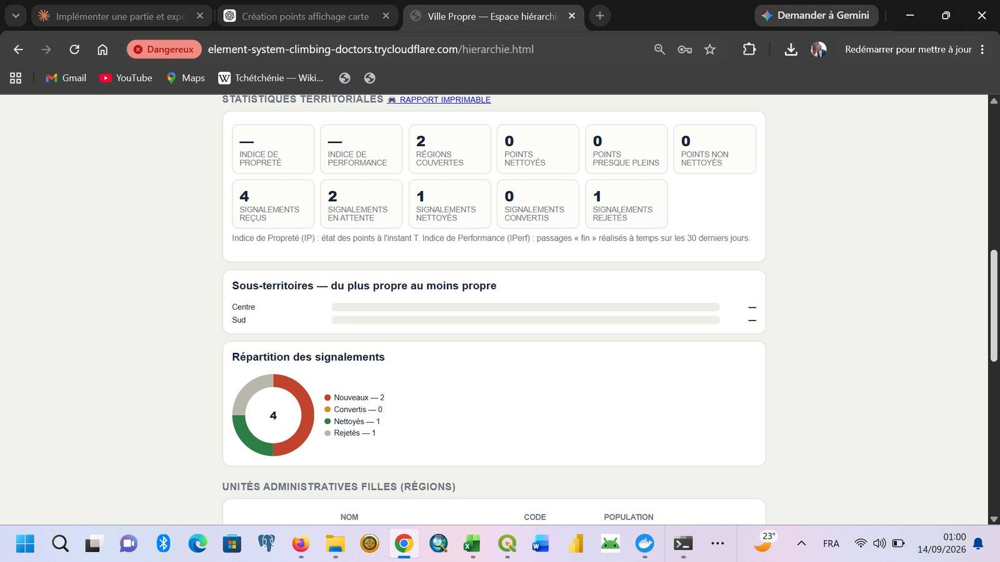
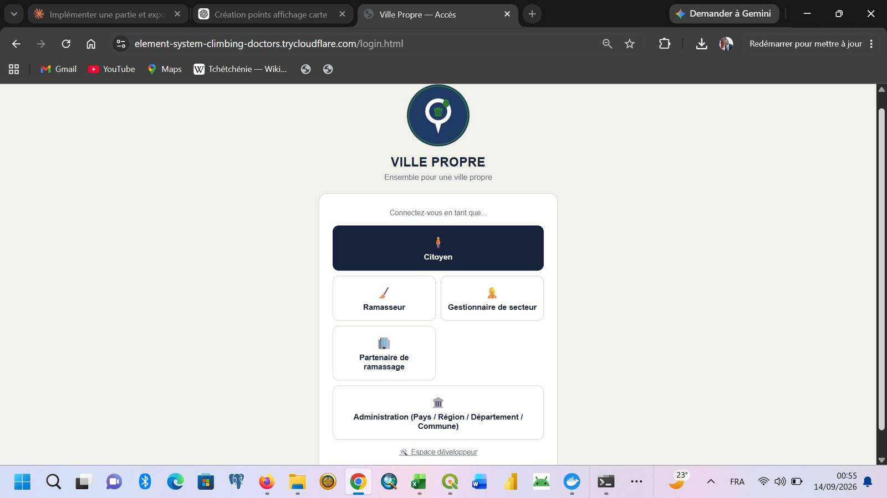
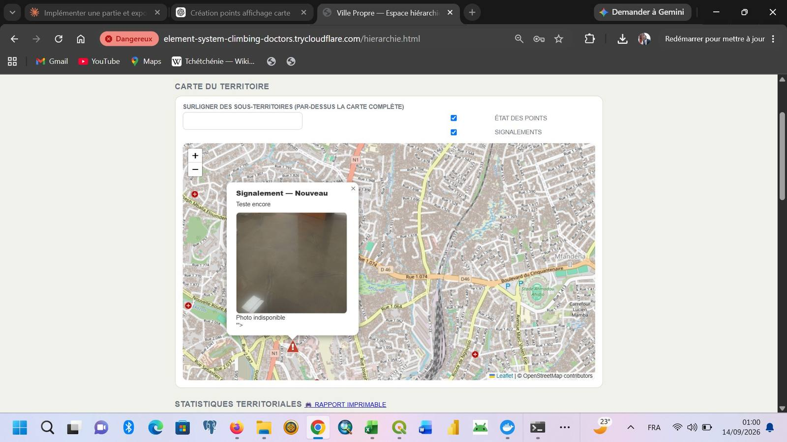
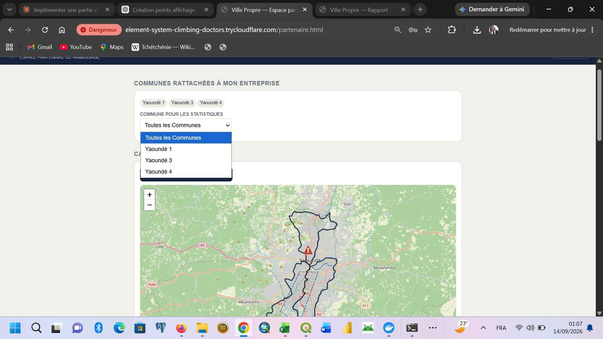
Plateforme web · Propreté urbaine
Plateforme en développement dédiée à la gestion de la propreté urbaine au Cameroun, avec collecte de signalements, localisation, suivi et restitution statistique.
Occupation du sol · Réserve de Zamakoué
Deux cartes d’occupation du sol réalisées sous QGIS, permettant de comparer la situation de 2015 et de 2025 sur la Réserve de Zamakoué.
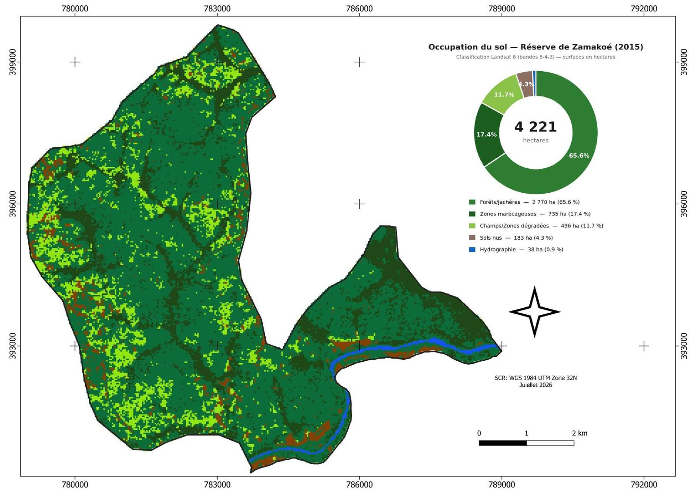
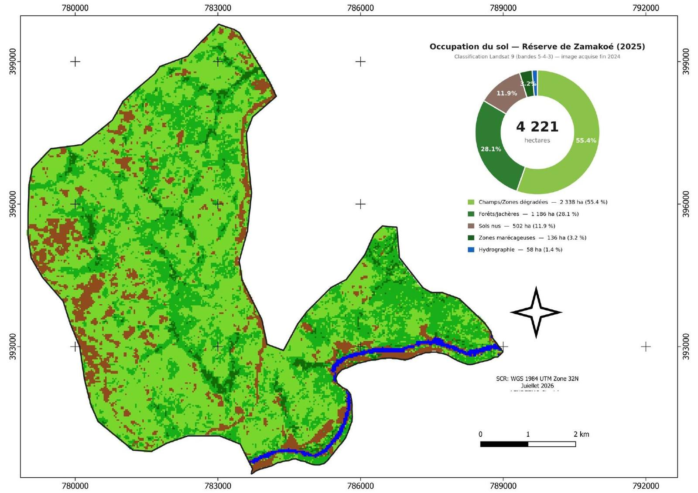
04 · PARCOURS
Opération du système SIGIF II, cartographie forestière et suivi des données géospatiales.
Collecte de données géographiques des plantations cacao-café et test d’une application mobile de collecte.
Projet de reboisement dans les réserves de Melap et Koutaba.
Guide pratique de cartographie forestière au Cameroun ; Excel pour le forestier.
Cartographie terrain et traitement des données géospatiales forestières.
École Nationale des Eaux et Forêts.
Université de Yaoundé 2-SOA.
Université de Yaoundé 2-SOA.
Lycée de SOA.
05 · RESSOURCES
Quelques livrables à consulter ou télécharger.
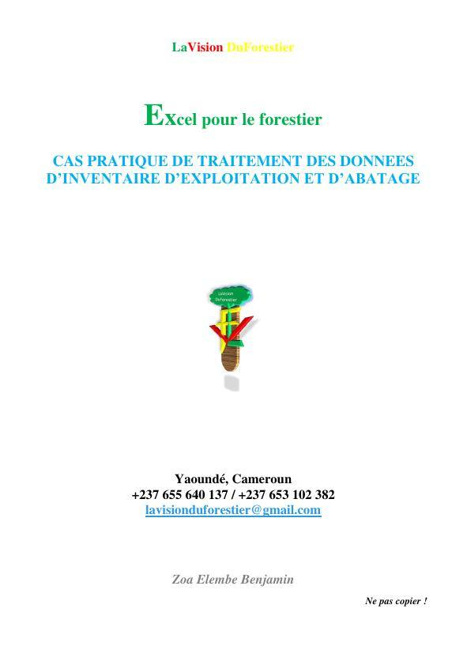
Cas pratique de traitement des données d’inventaire d’exploitation et d’abattage.
Consulter (lecture seule) →Documentation professionnelle fournie dans le portfolio.
Consulter (lecture seule) →06 · CONTACT
Échangeons sur votre besoin et construisons une solution adaptée.